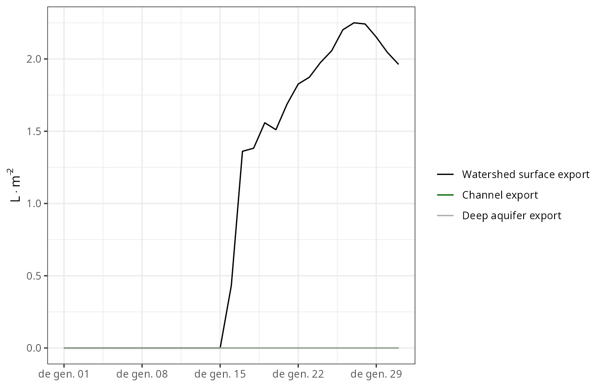
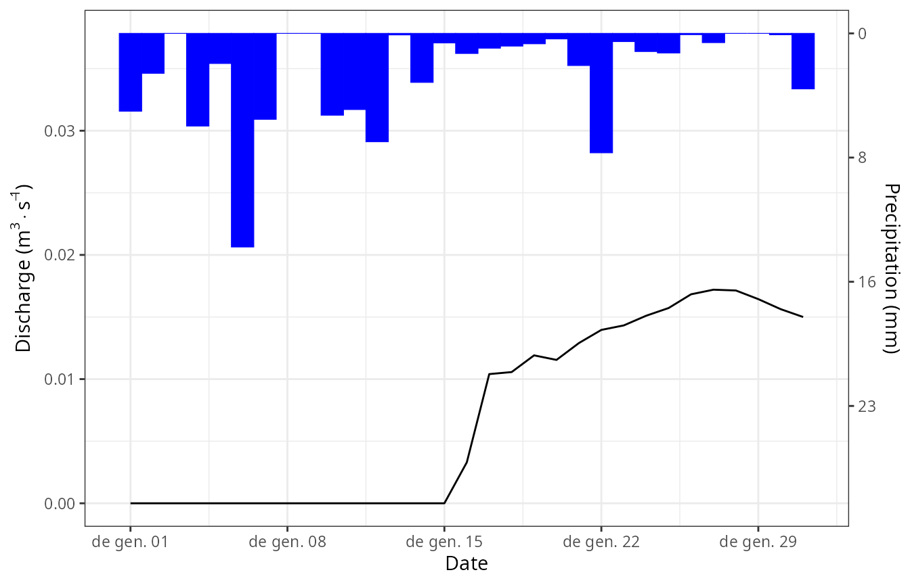
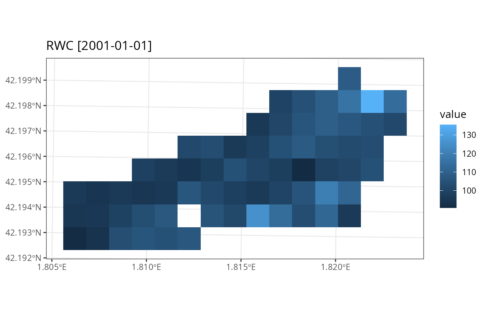
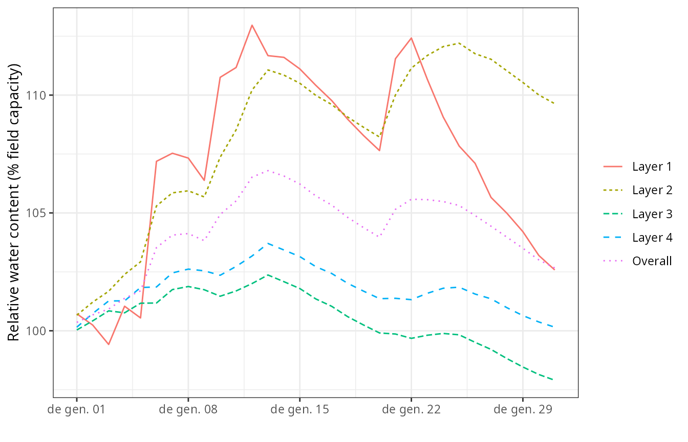
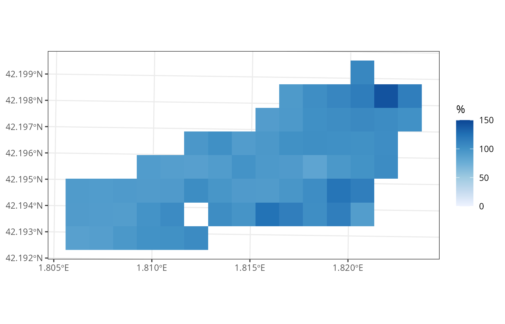
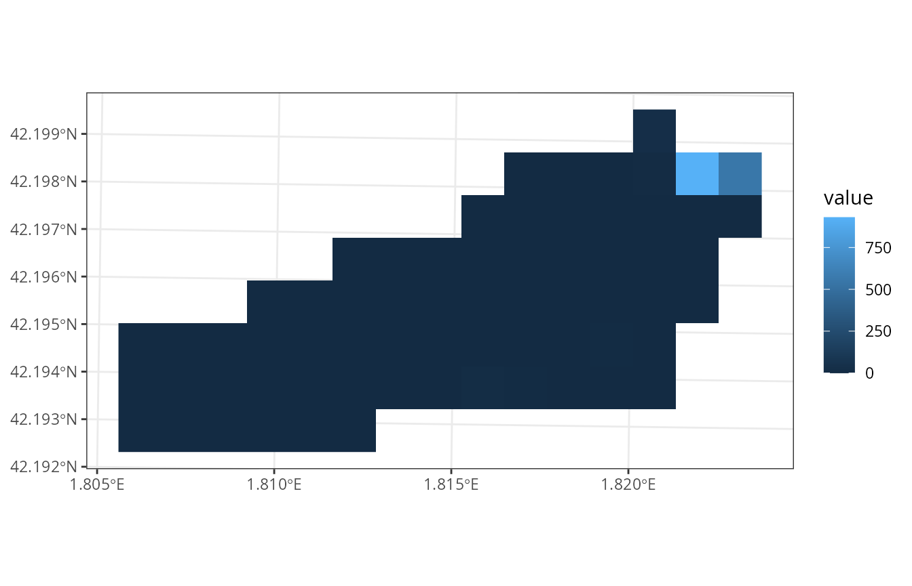
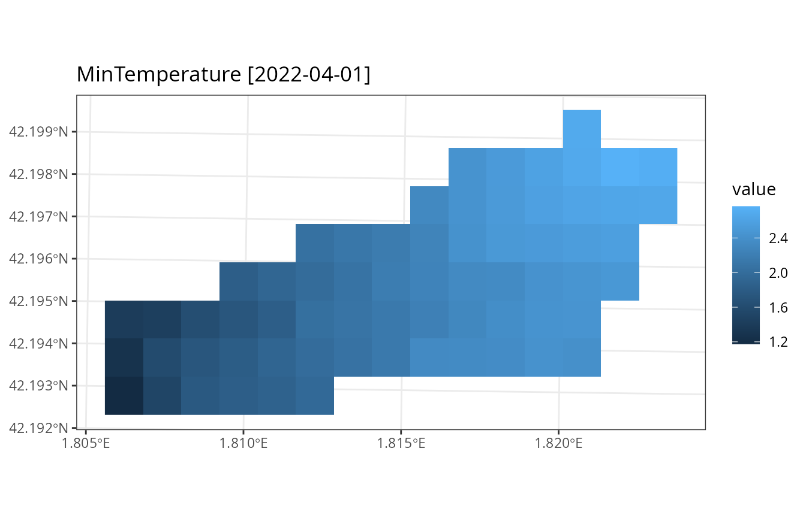
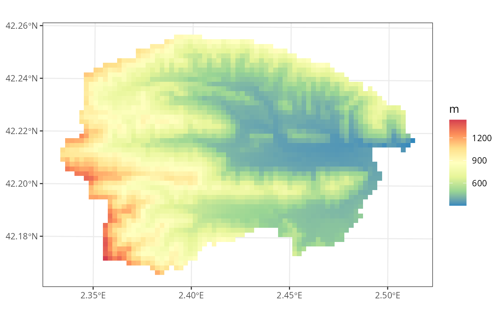
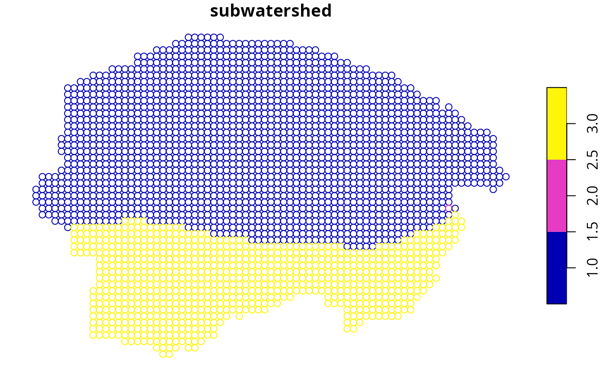
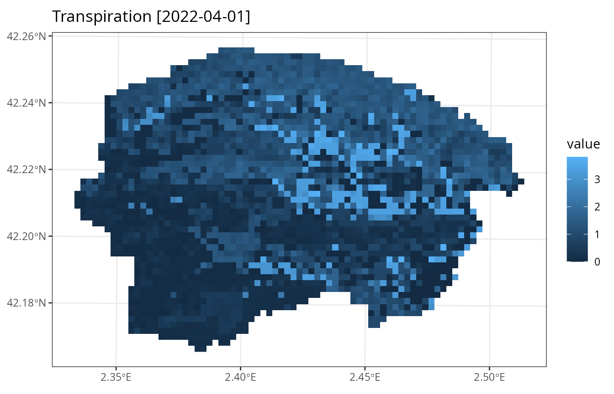

Watershed simulations
Miquel De Caceres
2025-09-12
Source:vignettes/runmodels/WatershedSimulations.Rmd
WatershedSimulations.RmdAim
The aim of this vignette is to illustrate how to use
medfateland (v. 2.7.2) to carry out simulations of
forest function and dynamics on a set of forest stands while including
lateral water transfer processes. This is done using functions
spwb_land(), growth_land() and
fordyn_land(); which are counterparts of functions
spwb(), growth() and fordyn() in
package medfate. We will focus here on function
spwb_land(), but the other two functions would be used
similarly. The same can be said for functions
spwb_land_day() and growth_land_day(), which
are counterparts of spwb_day() and
growth_day(), respectively.
Preparation
Preparing inputs for watershed simulations can be tedious. Two main inputs need to be assembled, described in the following two sections (see also Preparing inputs II: arbitrary locations).
Input sf objects
Here we load a small example watershed included with the package, that can be used to understand the inputs required:
data("example_watershed")
example_watershed## Simple feature collection with 66 features and 14 fields
## Geometry type: POINT
## Dimension: XY
## Bounding box: xmin: 401430 ymin: 4671870 xmax: 402830 ymax: 4672570
## Projected CRS: WGS 84 / UTM zone 31N
## # A tibble: 66 × 15
## geometry id elevation slope aspect land_cover_type
## * <POINT [m]> <int> <dbl> <dbl> <dbl> <chr>
## 1 (402630 4672570) 1 1162 11.3 79.2 wildland
## 2 (402330 4672470) 2 1214 12.4 98.7 agriculture
## 3 (402430 4672470) 3 1197 10.4 102. wildland
## 4 (402530 4672470) 4 1180 8.12 83.3 wildland
## 5 (402630 4672470) 5 1164 13.9 96.8 wildland
## 6 (402730 4672470) 6 1146 11.2 8.47 agriculture
## 7 (402830 4672470) 7 1153 9.26 356. agriculture
## 8 (402230 4672370) 8 1237 14.5 75.1 wildland
## 9 (402330 4672370) 9 1213 13.2 78.7 wildland
## 10 (402430 4672370) 10 1198 8.56 75.6 agriculture
## # ℹ 56 more rows
## # ℹ 9 more variables: forest <list>, soil <list>, state <list>,
## # depth_to_bedrock <dbl>, bedrock_conductivity <dbl>, bedrock_porosity <dbl>,
## # snowpack <dbl>, aquifer <dbl>, crop_factor <dbl>Some of the columns like forest, soil,
elevation, or state, were also present in the
example for spatially-uncoupled simulations, so we will not repeat them.
The following describes additional columns that are relevant here.
Land cover type
Simulations over watersheds normally include different land cover
types. These are described in column land_cover_type:
table(example_watershed$land_cover_type)##
## agriculture rock wildland
## 17 1 48Local and landscape processes will behave differently depending on the land cover type.
Aquifer and snowpack
Columns aquifer and snowpack are used as
state variables to store the water content in the aquifer and snowpack,
respectively.
Crop factors
Since the landscape contains agricultural lands, we need to define crop factors, which will determine transpiration flow as a proportion of potential evapotranspiration:
example_watershed$crop_factor = NA
example_watershed$crop_factor[example_watershed$land_cover_type=="agriculture"] = 0.75Channel network
In large watersheds, the hydrological behavior of the model may not
be appropriate because water routing in the river channel is not
considered. If a binary column called channel is included
in the input, the model will use it to determine the river network,
outlets and the time in days to reach them (see function
overland_routing for a static analysis of channel
routing).
Grid topology
Note that the sf structure does not imply a grid per
se. Point geometry is used to describe the central coordinates of
grid cells, but does not describe the grid. This means that another
spatial input is needed to describe the grid topology, which in our case
is an object of class SpatRaster from package
terra:
r <-terra::rast(xmin = 401380, ymin = 4671820, xmax = 402880, ymax = 4672620,
nrow = 8, ncol = 15, crs = "epsg:32631")
r## class : SpatRaster
## size : 8, 15, 1 (nrow, ncol, nlyr)
## resolution : 100, 100 (x, y)
## extent : 401380, 402880, 4671820, 4672620 (xmin, xmax, ymin, ymax)
## coord. ref. : WGS 84 / UTM zone 31N (EPSG:32631)The r object must have the same coordinate reference
system as the sf object. Moreover, each grid cell can
contain up to one point of the sf (typically at the cell
center). Some grid cells may be empty, though, so that the actual
simulations may be done on an incomplete grid. Note that the raster does
not contain data, only the topology is needed (to define neighbors and
cell sizes, for example). All relevant attribute data is already
included in the sf object.
Combining the r and sf objects allows
drawing rasterized maps:
plot_variable(example_watershed, variable = "elevation", r = r)
Watershed control options
Analogously to local-scale simulations with medfate, watershed simulations have overall control parameters. Notably, the user needs to decide which sub-model will be used for lateral water transfer processes (a decision similar to choosing the plant transpiration sub-model in medfate), by default “tetis”:
ws_control <- default_watershed_control("tetis")Initialization
Simulation model inputs need to be created for the target watershed
before launching simulations. This may be done automatically, though,
when calling watershed simulation functions, but in many occasions it is
practical to perform this step separately. If we plan to use function
spwb_land(), watershed initialization would be as
follows:
example_init <- initialize_landscape(example_watershed, SpParams = SpParamsMED,
local_control = defaultControl(soilDomains = "buckets"))## ℹ Creating 65 state objects for model 'spwb'.## ✔ Creating 65 state objects for model 'spwb'. [14ms]## ## • Transpiration mode [Granier: 65, Sperry: 0, Sureau: 0]## • Soil domains [buckets: 65, single: 0, dual: 0]
example_init## Simple feature collection with 66 features and 14 fields
## Geometry type: POINT
## Dimension: XY
## Bounding box: xmin: 401430 ymin: 4671870 xmax: 402830 ymax: 4672570
## Projected CRS: WGS 84 / UTM zone 31N
## # A tibble: 66 × 15
## geometry id elevation slope aspect land_cover_type
## * <POINT [m]> <int> <dbl> <dbl> <dbl> <chr>
## 1 (402630 4672570) 1 1162 11.3 79.2 wildland
## 2 (402330 4672470) 2 1214 12.4 98.7 agriculture
## 3 (402430 4672470) 3 1197 10.4 102. wildland
## 4 (402530 4672470) 4 1180 8.12 83.3 wildland
## 5 (402630 4672470) 5 1164 13.9 96.8 wildland
## 6 (402730 4672470) 6 1146 11.2 8.47 agriculture
## 7 (402830 4672470) 7 1153 9.26 356. agriculture
## 8 (402230 4672370) 8 1237 14.5 75.1 wildland
## 9 (402330 4672370) 9 1213 13.2 78.7 wildland
## 10 (402430 4672370) 10 1198 8.56 75.6 agriculture
## # ℹ 56 more rows
## # ℹ 9 more variables: forest <list>, soil <list>, state <list>,
## # depth_to_bedrock <dbl>, bedrock_conductivity <dbl>, bedrock_porosity <dbl>,
## # snowpack <dbl>, aquifer <dbl>, crop_factor <dbl>Here we use function defaultControl() to specify the
control parameters for local processes. Function
initialize_landscape() makes internal calls to
spwbInput() of medfate and defines a
column state with the initialized inputs.
At this point is important to learn one option that may speed up
calculations. Initialization may be done while simplifying forest
structure to the dominant species (see function
forest_reduceToDominant() in package
medfate). Hence, we can initialize using
reduce_to_dominant = TRUE:
example_simplified <- initialize_landscape(example_watershed, SpParams = SpParamsMED,
local_control = defaultControl(soilDomains = "single"),
reduce_to_dominant = TRUE)## ℹ Creating 65 state objects for model 'spwb'.## ✔ Creating 65 state objects for model 'spwb'. [5ms]## ## • Transpiration mode [Granier: 65, Sperry: 0, Sureau: 0]## • Soil domains [buckets: 0, single: 65, dual: 0]
example_simplified## Simple feature collection with 66 features and 14 fields
## Geometry type: POINT
## Dimension: XY
## Bounding box: xmin: 401430 ymin: 4671870 xmax: 402830 ymax: 4672570
## Projected CRS: WGS 84 / UTM zone 31N
## # A tibble: 66 × 15
## geometry id elevation slope aspect land_cover_type
## * <POINT [m]> <int> <dbl> <dbl> <dbl> <chr>
## 1 (402630 4672570) 1 1162 11.3 79.2 wildland
## 2 (402330 4672470) 2 1214 12.4 98.7 agriculture
## 3 (402430 4672470) 3 1197 10.4 102. wildland
## 4 (402530 4672470) 4 1180 8.12 83.3 wildland
## 5 (402630 4672470) 5 1164 13.9 96.8 wildland
## 6 (402730 4672470) 6 1146 11.2 8.47 agriculture
## 7 (402830 4672470) 7 1153 9.26 356. agriculture
## 8 (402230 4672370) 8 1237 14.5 75.1 wildland
## 9 (402330 4672370) 9 1213 13.2 78.7 wildland
## 10 (402430 4672370) 10 1198 8.56 75.6 agriculture
## # ℹ 56 more rows
## # ℹ 9 more variables: forest <list>, soil <list>, state <list>,
## # depth_to_bedrock <dbl>, bedrock_conductivity <dbl>, bedrock_porosity <dbl>,
## # snowpack <dbl>, aquifer <dbl>, crop_factor <dbl>For computational reasons, we will keep with this simplified initialization in the next sections.
Carrying out simulations
Launching watershed simulations
To speed up calculations, we call function spwb_land()
for a single month:
dates <- seq(as.Date("2001-01-01"), as.Date("2001-01-31"), by="day")
res_ws1 <- spwb_land(r, example_simplified,
SpParamsMED, examplemeteo, dates = dates, summary_frequency = "month",
watershed_control = ws_control, progress = FALSE)Although simulations are performed using daily temporal steps,
parameter summary_frequency allows storing cell-level
results at coarser temporal scales, to reduce the amount of memory in
spatial results (see also parameter summary_blocks to
decide which outputs are to be kept in summaries).
Structure of simulation outputs
Function spwb_land() and growth_land()
return a list with the following elements:
names(res_ws1)## [1] "watershed_control" "sf" "watershed_balance"
## [4] "watershed_soil_balance" "channel_export_m3s" "outlet_export_m3s"Where sf is an object of class sf,
analogous to those of functions *_spatial():
res_ws1$sf## Simple feature collection with 66 features and 8 fields
## Geometry type: POINT
## Dimension: XY
## Bounding box: xmin: 401430 ymin: 4671870 xmax: 402830 ymax: 4672570
## Projected CRS: WGS 84 / UTM zone 31N
## # A tibble: 66 × 9
## geometry state aquifer snowpack summary result outlet
## * <POINT [m]> <list> <dbl> <dbl> <list> <list> <lgl>
## 1 (402630 4672570) <spwbInpt [19]> 5.11 3.56 <dbl[…]> <NULL> FALSE
## 2 (402330 4672470) <aspwbInp [4]> 0.0587 3.56 <dbl[…]> <NULL> FALSE
## 3 (402430 4672470) <spwbInpt [19]> 0.297 3.56 <dbl[…]> <NULL> FALSE
## 4 (402530 4672470) <spwbInpt [19]> 0.719 2.54 <dbl[…]> <NULL> FALSE
## 5 (402630 4672470) <spwbInpt [19]> 9.05 2.57 <dbl[…]> <NULL> FALSE
## 6 (402730 4672470) <aspwbInp [4]> 927. 3.56 <dbl[…]> <NULL> TRUE
## 7 (402830 4672470) <aspwbInp [4]> 535. 3.56 <dbl[…]> <NULL> FALSE
## 8 (402230 4672370) <spwbInpt [19]> 0.0667 2.53 <dbl[…]> <NULL> FALSE
## 9 (402330 4672370) <spwbInpt [19]> 0.393 2.81 <dbl[…]> <NULL> FALSE
## 10 (402430 4672370) <aspwbInp [4]> 1.05 3.56 <dbl[…]> <NULL> FALSE
## # ℹ 56 more rows
## # ℹ 2 more variables: outlet_backlog <dbl>, subwatershed <int>Columns state, aquifer and
snowpack contain state variables, whereas
summary contains temporal summaries for all cells. Column
result is empty in this case, but see below.
The next two elements of the simulation result list, namely
watershed_balance and watershed_soil_balance,
refer to watershed-level results. For example,
watershed_balance contains the daily elements of the water
balance at the watershed level, including the amount of water exported
in mm in the last column.
head(res_ws1$watershed_balance)## dates PET Precipitation Rain Snow Snowmelt Interception
## 1 2001-01-01 0.9003872 4.869109 4.869109 0 0 0.7754218
## 2 2001-01-02 1.5958674 2.498292 2.498292 0 0 0.6090627
## 3 2001-01-03 1.3417718 0.000000 0.000000 0 0 0.0000000
## 4 2001-01-04 0.6054039 5.796973 5.796973 0 0 0.7723790
## 5 2001-01-05 1.6387324 1.884401 1.884401 0 0 0.4808826
## 6 2001-01-06 1.2058183 13.359801 13.359801 0 0 0.8613997
## NetRain Infiltration InfiltrationExcess SaturationExcess CellRunon
## 1 4.093687 4.093687 0.00000000 0 0.00000000
## 2 1.889229 1.889229 0.00000000 0 0.00000000
## 3 0.000000 0.000000 0.00000000 0 0.00000000
## 4 5.024594 5.024594 0.00000000 0 0.00000000
## 5 1.403519 1.403519 0.00000000 0 0.00000000
## 6 12.498401 12.498401 0.05090607 0 0.05090607
## CellRunoff DeepDrainage CapillarityRise DeepAquiferLoss SoilEvaporation
## 1 0.00000000 0.077292528 0.000000e+00 0 0.38748895
## 2 0.00000000 0.041164112 0.000000e+00 0 0.15216127
## 3 0.00000000 0.002936213 3.902278e-06 0 0.14785777
## 4 0.00000000 0.091708764 0.000000e+00 0 0.11747624
## 5 0.00000000 0.031982038 0.000000e+00 0 0.11371441
## 6 0.05090607 0.157191215 4.530668e-05 0 0.09414728
## Transpiration HerbTranspiration InterflowBalance BaseflowBalance
## 1 0.2846843 0 0.000000e+00 2.082982e-18
## 2 0.5046007 0 1.059758e-16 9.856383e-20
## 3 0.4236567 0 6.728624e-18 -1.412748e-18
## 4 0.1918746 0 3.364312e-18 4.865768e-18
## 5 0.5180919 0 4.037175e-17 -6.899468e-18
## 6 0.3812676 0 1.816729e-16 -1.895711e-18
## AquiferExfiltration ChannelExport WatershedExport NegativeAquiferCorrection
## 1 0 0 0 0
## 2 0 0 0 0
## 3 0 0 0 0
## 4 0 0 0 0
## 5 0 0 0 0
## 6 0 0 0 0Values of this output data frame are averages across cells in the
landscape. Data frame watershed_soil_balance is similar to
watershed_balance but focusing on cells that have a soil
(i.e. excluding artificial, rock or water land cover). Finally,
channel_export_m3s contains the average river flow reaching
each channel cell each day and outlet_export_m3s contains
the average river flow reaching each outlet cell each day (both in units
of cubic meters per second):
head(res_ws1$outlet_export_m3s)## 6
## 2001-01-01 0
## 2001-01-02 0
## 2001-01-03 0
## 2001-01-04 0
## 2001-01-05 0
## 2001-01-06 0Watershed-level summaries and plots
The components of watershed-level water balance can be displayed in
the console using a tailored summary() function:
summary(res_ws1)## Snowpack water balance components:
## Snow fall (mm) 16.65 Snow melt (mm) 13.42
## Soil water balance components:
## Infiltration (mm) 63.31 Saturation excess (mm) 0
## Deep drainage (mm) 54.54 Capillarity rise (mm) 0
## Soil evaporation (mm) 1.55 Plant transpiration (mm) 10.08
## Interflow balance (mm) 0
## Aquifer water balance components:
## Deep drainage (mm) 54.74 Capillarity rise (mm) 0
## Exfiltration (mm) 31.33 Deep aquifer loss (mm) 0
## Negative aquifer correction (mm) 0
## Watershed water balance components:
## Precipitation (mm) 74.75
## Interception (mm) 8.13 Soil evaporation (mm) 1.53
## Plant transpiration (mm) 9.92
## Subsurface flow balance (mm) 0
## Groundwater flow balance (mm) 0
## Export runoff (mm) 31.33Analogously to plots available with package medfate,
one can display time series of watershed-level water balance components
using function plot(), for example:
plot(res_ws1, type = "Export")
or the usual combination of hietograph and hydrograph using:
plot(res_ws1, type = "Hydrograph")
Accessing and plotting cell summaries
Unlike spwb_spatial() where summaries could be
arbitrarily generated a posteriori from simulation results,
with spwb_land() the summaries are always fixed and
embedded with the simulation result. For example, we can inspect the
summaries for a given landscape cell using:
res_ws1$sf$summary[[1]]## MinTemperature MaxTemperature PET Rain Snow SWE
## 2001-01-01 -3.203556 2.427977 31.14151 58.09884 16.65065 1.699603
## RWC SoilVol WTD DTA
## 2001-01-01 108.6419 584.6631 3250.769 15.4753Additional variables (water balance components, carbon balance
components, etc.) can be added to summaries via parameter
summary_blocks. Some of these summaries are temporal
averages (e.g. state variables), while others are temporal sums
(e.g. water or carbon balance components), depending on the
variable.
Maps of variable summaries can be drawn from the result of function
spwb_land() in a similar way as done for
spwb_spatial(). As an example we display a map of the
average soil relative water content during the simulated month:
plot_summary(res_ws1$sf, variable = "RWC", date = "2001-01-01", r = r)
Full simulation results for specific cells
The idea of generating summaries arises from the fact that local
models can produce a large amount of results, of which only some are of
interest at the landscape level. Nevertheless, it is possible to specify
those cells for which full daily results are desired. This is done by
adding a column result_cell in the input sf
object:
# Set request for daily model results in cells number 3 and 9
example_simplified$result_cell <- FALSE
example_simplified$result_cell[c(3,9)] <- TRUEIf we launch the simulations again (omitting progress information):
res_ws1 <- spwb_land(r, example_simplified,
SpParamsMED, examplemeteo, dates = dates, summary_frequency = "month",
watershed_control = ws_control, progress = FALSE)We can now retrieve the results of the desired cell, e.g. the third
one, in column result of sf:
S <- res_ws1$sf$result[[3]]
class(S)## [1] "spwb" "list"This object has class spwb and the same structure
returned by function spwb() of medfate.
Hence, we can inspect daily results using functions
shinyplot() or plot(), for example:
plot(S, "SoilRWC")
Continuing a previous simulation
The result of a simulation includes an element state,
which stores the state of soil and stand variables at the end of the
simulation. This information can be used to perform a new simulation
from the point where the first one ended. In order to do so, we need to
update the state variables in spatial object with their values at the
end of the simulation, using function
update_landscape():
example_watershed_mod <- update_landscape(example_watershed, res_ws1)
names(example_watershed_mod)## [1] "geometry" "id" "elevation"
## [4] "slope" "aspect" "land_cover_type"
## [7] "forest" "soil" "state"
## [10] "depth_to_bedrock" "bedrock_conductivity" "bedrock_porosity"
## [13] "snowpack" "aquifer" "crop_factor"
## [16] "outlet_backlog"Note that a new column state appears in now in the
sf object. We can check the effect by drawing the
relative water content:
plot_variable(example_watershed_mod, variable = "soil_rwc_curr", r = r)
Now we can continue our simulation, in this case adding an extra month:
dates <- seq(as.Date("2001-02-01"), as.Date("2001-02-28"), by="day")
res_ws3 <- spwb_land(r, example_watershed_mod,
SpParamsMED, examplemeteo, dates = dates, summary_frequency = "month",
watershed_control = ws_control, progress = FALSE)The fact that no cell required initialization is an indication that we used an already initialized landscape.
Burn-in periods
Like other distributed hydrological models, watershed simulations with medfateland will normally require a burn-in period to allow soil moisture and aquifer levels to reach a dynamic equilibrium. We recommend users to use at least one or two years of burn-in period, but this will depend on the size of the watershed. In medfate we provide users with a copy of the example watershed, where burn-in period has already been simulated. This can be seen by inspecting the aquifer level:
data("example_watershed_burnin")
plot_variable(example_watershed_burnin, variable = "aquifer", r = r)
If we run a one-month simulation on this data set we can then compare the output before and after the burn-in period to illustrate its importance:
dates <- seq(as.Date("2001-01-01"), as.Date("2001-01-31"), by="day")
res_ws3 <- spwb_land(r, example_watershed_burnin,
SpParamsMED, examplemeteo, dates = dates, summary_frequency = "month",
watershed_control = ws_control, progress = FALSE)
data.frame("before" = res_ws1$watershed_balance$WatershedExport,
"after" = res_ws3$watershed_balance$WatershedExport)## before after
## 1 0.0000000 0.3358477
## 2 0.0000000 0.2849383
## 3 0.0000000 0.2710239
## 4 0.0000000 0.3749774
## 5 0.0000000 0.3436249
## 6 0.0000000 0.5517443
## 7 0.0000000 0.4952552
## 8 0.0000000 0.5732651
## 9 0.0000000 0.6071644
## 10 0.0000000 0.8147722
## 11 0.0000000 0.9448990
## 12 0.0000000 1.1609422
## 13 0.0000000 1.2501232
## 14 0.0000000 1.3994129
## 15 0.0000000 1.4765262
## 16 0.8351093 1.5433484
## 17 1.5216469 1.5312703
## 18 1.5252638 1.5061681
## 19 1.7786587 1.4541204
## 20 1.6554239 1.3881780
## 21 1.8650843 1.4678973
## 22 1.9730926 1.5166361
## 23 2.0248463 1.5171288
## 24 2.1197260 1.5554719
## 25 2.2070084 1.5680345
## 26 2.3631633 1.5952060
## 27 2.4141957 1.5783955
## 28 2.4051552 1.5790579
## 29 2.3179406 1.5183760
## 30 2.2075102 1.4531713
## 31 2.1197476 1.4045194Simulations of watershed forest dynamics
Running growth_land() is very similar to running
spwb_land(). However, a few things change when we want to
simulate forest dynamics using fordyn_land(). Regarding the
sf input, an additional column
management_arguments may be defined to specify the forest
management arguments (i.e. silviculture) of cells. Furthermore, the
function does not allow choosing the temporal scale of summaries. Strong
simplification of forest structure to dominant species will not normally
make sense in this kind of simulation, since the focus is on forest
dynamics.
A call to fordyn_land() for a single year is given here,
as an example, starting from the initial example watershed:
res_ws4 <- fordyn_land(r, example_watershed,
SpParamsMED, examplemeteo,
watershed_control = ws_control, progress = FALSE)Simulations using weather interpolation
Large watersheds will have spatial differences in climatic conditions like temperature, precipitation. Specifying a single weather data frame for all the watershed may be not suitable in this case. Specifying a different weather data frame for each watershed cell can also be a problem, if spatial resolution is high, due to the huge data requirements. A solution for this can be using interpolation on the fly, inside watershed simulations. This can be done by supplying an interpolator object (or a list of them), as defined in package meteoland. Here we use the example data provided in the package:
interpolator <- meteoland::with_meteo(meteoland_meteo_example, verbose = FALSE) |>
meteoland::create_meteo_interpolator(params = defaultInterpolationParams())## ℹ Creating interpolator...## • Calculating smoothed variables...## • Updating intial_Rp parameter with the actual stations mean distance...## ✔ Interpolator created.Once we have this object, using it is straightforward:
res_ws5 <- spwb_land(r, example_watershed_burnin, SpParamsMED,
meteo = interpolator, summary_frequency = "month",
watershed_control = ws_control, progress = FALSE)Note that we did not define dates, which are taken from the interpolator data. If we plot the minimum temperature, we will appreciate the spatial variation in climate:
plot_summary(res_ws5$sf, variable = "MinTemperature", date = "2022-04-01", r = r)
For large watersheds and fine spatial resolution interpolation can become slow. One can then specify that interpolation is performed on a coarser grid, by using a watershed control parameter, for example:
ws_control$weather_aggregation_factor <- 3To illustrate its effect, we repeat the previous simulation and plot the minimum temperature:
res_ws6 <- spwb_land(r, example_watershed_burnin, SpParamsMED,
meteo = interpolator, summary_frequency = "month",
watershed_control = ws_control, progress = FALSE)
plot_summary(res_ws6$sf, variable = "MinTemperature", date = "2022-04-01", r = r)Parallel simulations using subwatersheds
Simulations can be rather slow even for moderately-sized watersheds. For these reason, medfateland now incorporates the possibility to perform parallel simulations in subwatersheds, and then aggregate the results. To illustrate this feature we will use the data set of Bianya watershed (see Preparing inputs II: arbitrary locations; you can find the dataset in the medfateland GitHub repository).
We begin by loading the raster and sf inputs for
Bianya:
If we draw the elevation map, we will visually identify two subwatersheds:
plot_variable(sf, variable = "elevation", r = r)
Package medfateland includes function
overland_routing() to statically illustrate how overland
runoff processes are dealt with (i.e. distribution of runoff among
neighbors, channel routing, etc.).
or <- overland_routing(r, sf)
head(or)## Simple feature collection with 6 features and 12 fields
## Geometry type: POINT
## Dimension: XY
## Bounding box: xmin: 449799.3 ymin: 4678387 xmax: 450794.5 ymax: 4678387
## Projected CRS: ETRS89 / UTM zone 31N
## # A tibble: 6 × 13
## geometry elevation slope waterRank waterOrder queenNeigh
## <POINT [m]> <dbl> <dbl> <int> <int> <list>
## 1 (449799.3 4678387) 900. 24.5 401 2533 <int [4]>
## 2 (449998.3 4678387) 901. 27.5 399 2455 <int [5]>
## 3 (450197.4 4678387) 880. 23.2 446 2416 <int [5]>
## 4 (450396.4 4678387) 843. 27.9 554 2487 <int [5]>
## 5 (450595.5 4678387) 878. 16.9 454 2534 <int [5]>
## 6 (450794.5 4678387) 860. 22.4 508 2511 <int [4]>
## # ℹ 7 more variables: waterQ <list>, channel <lgl>, outlet <lgl>,
## # target_outlet <int>, distance_to_outlet <dbl>, outlet_backlog <dbl>,
## # subwatershed <int>In this function we can specifically ask for sub-watersheds, as follows:
or <- overland_routing(r, sf, subwatersheds = TRUE,
max_overlap = 0.3)In short, sub-watershed definition consists in: (a) finding the drainage basin of each outlet or channel cell; (b) aggregating drainage basins until the overlap is less than the specified parameter; and (c) deciding to which sub-watershed each border cell belongs to. This function identified three sub-watersheds, one of them being an isolated channel cell:
plot(or[, "subwatershed"])
Let’s now illustrate how to perform watershed simulations with
parallelization and subwatersheds. We begin by initializing the input
(here we used a "buckets" soil hydrology to speed up
calculations, but "single" would be more appropriate).
sf_init <- initialize_landscape(sf, SpParams = SpParamsMED,
local_control = defaultControl(soilDomains = "buckets"),
progress = FALSE)Subwatershed definition is controlled via watershed control options
as follows (simulation functions internally call
overland_routing()):
ws_control <- default_watershed_control("tetis")
ws_control$tetis_parameters$subwatersheds <- TRUE
ws_control$tetis_parameters$max_overlap <- 0.3Now, we are ready to launch the watershed simulation with parallelization. This consists in performing simulations for each subwatershed independently, aggregating the results and, finally, performing channel routing.
For simplicity, we only simulate five days. We ask for console output to see what the model is doing:
dates <- seq(as.Date("2022-04-01"), as.Date("2022-04-05"), by="day")
res_ws7 <- spwb_land(r, sf_init,
SpParamsMED, interpolator, dates = dates,
summary_frequency = "day", summary_blocks = "WaterBalance",
watershed_control = ws_control, progress = TRUE,
parallelize = TRUE)## ## ── Simulation of model 'spwb' over a watershed ─────────────────────────────────## ## ── INPUT CHECKING ──## ## ℹ Checking raster topology## ✔ Checking raster topology [15ms]## ## ℹ Checking 'sf' data columns## ℹ Column 'snowpack' was missing in 'sf'. Initializing empty snowpack.## ℹ Checking 'sf' data columnsℹ Minimum bedrock porosity set to 0.1%.
## ℹ Checking 'sf' data columnsℹ Column 'aquifer' was missing in 'sf'. Initializing empty aquifer.
## ℹ Checking 'sf' data columns✔ Checking 'sf' data columns [3.9s]
##
## ℹ Determining neighbors and overland routing for TETIS
## ✔ Determining neighbors and overland routing for TETIS [2s]
##
## • Hydrological model: TETIS
## • Number of grid cells: 3825 Number of target cells: 2573
## • Average cell area: 39575 m2, Total area: 15138 ha, Target area: 10183 ha
## • Cell land use [wildland: 2161 agriculture: 331 artificial: 78 rock: 0 water:
## 3]
## • Cells with soil: 2492
## • Number of days to simulate: 5
## • Number of temporal cell summaries: 5
## • Number of cells with daily model results requested: 0
## • Number of channel cells: 158
## • Number of outlet cells: 28
## • Number of subwatersheds: 3
## • Weather interpolation factor: 1
##
## ── INITIALISATION ──
##
## ℹ All state objects are already available for 'spwb'.
## • Transpiration mode [Granier: 2492, Sperry: 0, Sureau: 0]
## • Soil domains [buckets: 2492, single: 0, dual: 0]
##
## ── PARALLEL SIMULATION of 3 SUB-WATERSHEDS in 3 NODES ──
##
## ── MERGING SUB-WATERSHED RESULTS ──
##
## ── CHANNEL ROUTING ──
##
## • Initial outlet backlog sum (m3): 0
## • Channel balance target (m3): 0 outlet change (m3): 0 backlog change (m3): 0
## • Final outlet backlog sum (m3): 0
##
## ── FINAL BALANCE CHECK ──
##
## • Final channel sum (m3): 0
## • Final outlet sum (m3): 0
## • Final watershed export sum (m3): 0As an example of the output, we show a map of woody plant
transpiration (note that we asked for water balance components using
summary_blocks = "WaterBalance":
plot_summary(res_ws7, variable = "Transpiration", date = "2022-04-01", r = r)